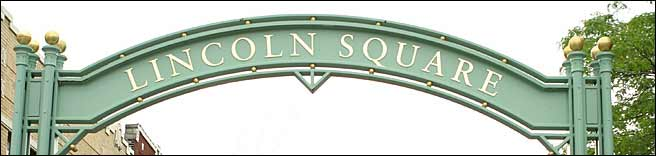
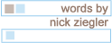

 |
|
 Perhaps in the past this reviewer has written some not-so-flattering things about previous intersections, and, as with a former flame, time has healed some wounds. I've come back nicer, more mature and with an understanding only wisdom can bring.
I'm just covering my tracks, actually, because I fell in love with this intersection. While the intersection proper is the convergence of Lincoln, Western and Lawrence Avenues, I couldn't resist the urge of Lincoln Square, so I covered mostly Lincoln.
|
|
01. The Chicago Brauhaus, or, beer, bratwurst and … polka: 9.2
The story of Germany in the twentieth century is extraordinarily dynamic – it went from aggressor to economically-trodden defeated nation to even more super-pissed aggressor to separatist state and all the way to modern world power in less than 100 years – and the country's longevity, I think, can be traced to its austere roots of drinking obscenely large steins of hardcore brew and singing along to beer-hall music. Such a legacy is continued nightly in Chicago, an area not especially known for its German population. Come channel the spirits of polka bands long forgotten while wearing a small, and very ridiculous, felt hat.
The time to visit is, of course, Oktoberfest. But to be perfectly fair, it's Oktoberfest most of the time while you're inside. Everyone gets down in the face of lederhosen-clad men shouting “Hey!” into the microphone while Brauhaus patrons lock arms and sway to the sounds of songs in a foreign language. It's the closest many of us have come to a religious experience in the last ten years.
|
|
02. The Lombard Lamp and the surrounding square: 8.7
One of the most striking features of the Lincoln/Western/Lawrence area was the urbanized nuclear families. While the people walking by were normal in most respects, there were just certain things that set them as slightly different from the rest. Young couples, while not uncommon, all had children, which was slightly more eyebrow-raising. And they kept coming by – there was never a mother alone with a child. It was invariably a mother and a father and a child. The nuclear family units were enough to fire a fusion reactor. Just a few benches down from where I was sitting, a red-haired woman was playing the guitar and singing softly. I couldn't help myself, and the first thing I thought of was one of those Nickelodeon daytime shows where an incredibly maladapted man sings about feeling good with friends or something, but this was beautiful and uplifting instead. She wasn't panhandling, either. Just playing for the sake of playing, giving the cobblestone-square a soundtrack.
At the far end is a green lamp featuring statuettes of cherubim and a plaque claiming that the lamp a replica of one that stands on the Lombard Bridge in Hamburg , Germany . In addition to being an amazing work of art – its brother replica stands in New York 's Central Park – it's also a great pole for kids. While I was taking notes, a few kids made up a game wherein one would swing around the pole with one arm, and the other kids would try to touch the pole without being hit by the swinging boy. It looked like a great game, made all the better by the fact that they were using city-commissioned artworks as normal playground equipment. Think how much more fun you would have had as a child playing something like Kick the Can with a can of, say, caviar. Can you say high class?
|
| comments: intersection section |
|
subject: man with pigeons
date: 07.01.2004
name: Mar
comment:
I really love the Chicago Brauhaus. I went there for my roommates b-day party and was never so excited as I was to see the size of their steins and all the fantastic German beer. Magnifique! Also, I just wanted to say you should have mentioned the man who sits in the area everyday. Feeding the pidgeons. I will never forget the first time I saw him, had I not been stopped at the traffic light, I may have gotten into an accident. An older gentle man with close to a flock of pidgeons, on each arm, in his lap and even on his head. He is there all the time-during the warmer time of year, and when I'm in the area which is ever other day I look for him. He's hard to miss. |
| |
subject: pigeon guy
date: 07.01.2004
name: click on it!
comment:
there's a picture of this pigeon man in the article----click to enlarge! |
| |
subject: aha
date: 07.01.2004
name: Mar
comment:
I saw the picture |
| |
subject: germans!
date: 07.10.2004
name: bill
comment:
hey nick: germans are now and have been for the last 150 years the largest ethnic immigrant group in chicago--the irish just run the place. |
| |
subject: mustard
date: 07.17.2004
name: fp
comment:
to anyone who hasn't tasted the goodness that is mustard in a tube, get on up to lincoln square and try it out. look for words like 'scharf' and 'feuer' on the tube. german mustard is the best. |
| |